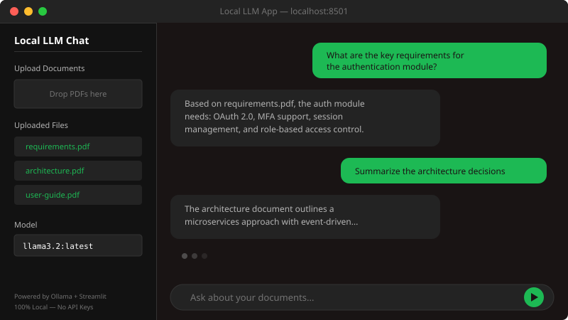
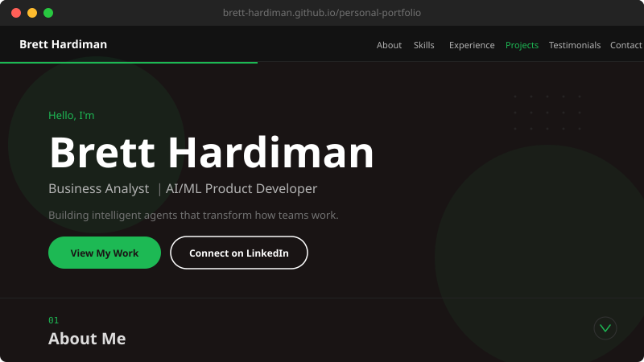
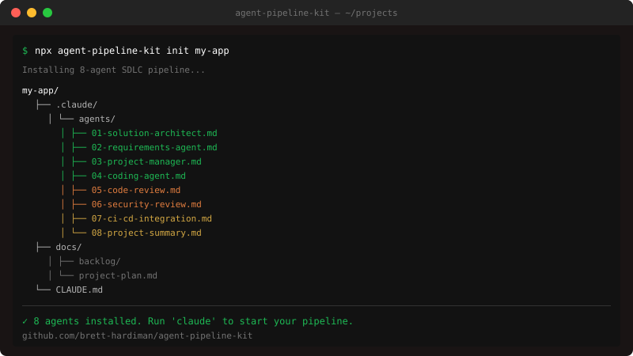
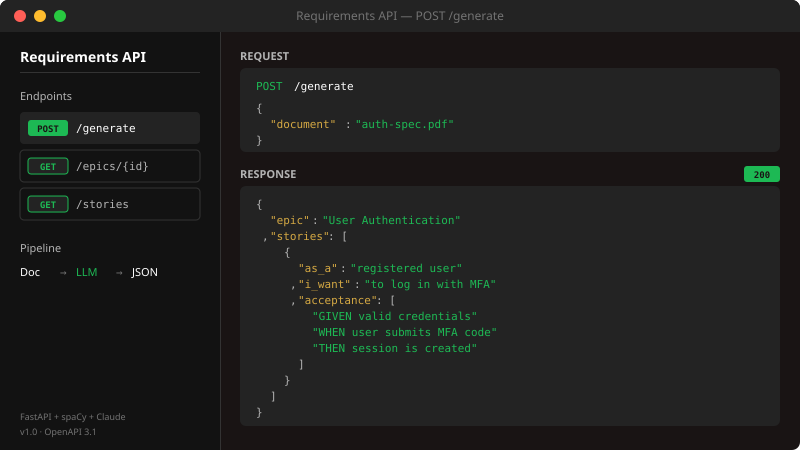
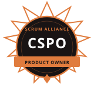
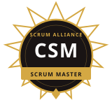

Hello, I'm
Brett Hardiman
AI/ML Product Owner | AI Engineer
Using AI to work smarter, build faster, and never stop learning.
About Me
I started out at Johnson & Johnson Insurance as a Business Analyst — gathering requirements, writing specs, updating SQL databases, and learning how to get developers and stakeholders on the same page. That role gave me the foundation I still build on: how to listen to what people actually need, how to translate that into something a dev team can run with, and how software gets built when real constraints are involved.
I moved to Booz Allen Hamilton as a Requirements Analyst and ended up going deep fast — became the go-to person on several government applications, got my CSM and CSPO certifications, and started wondering what else I could do. I could see AI was about to change everything, and I knew that if I wanted to stay relevant — especially coming from a non-technical role — I needed to get more technical. So I enrolled in Booz Allen’s Data Science Tech Excellence Program and started learning Python, machine learning, NLP, and large language models from scratch. That bet paid off: I got promoted, moved to the AI/ML ART, led three AI initiatives from concept to MVP, and was hands-on reviewing data science outputs and contributing to architecture discussions along the way. Along the way I started building AI agents. My Tech Lead had architected a multi-agent pipeline for the team, and I built the Requirements Agent that plugged into it — my agent took his architecture output, broke it into development stories, and pushed them into the backlog for his downstream agents to pick up and work. Owning that node taught me how agentic systems actually fit together.
Outside the pipeline, I built three standalone agents using Jira MCP: a DSU facilitator, a sprint summarizer, and a Jira research agent that surfaced quick reports on initiatives — what they were, when they happened, who the stakeholders were, and who to contact. My team used them, I trained my colleagues on how to, and those tools are now part of how the team operates day-to-day.
I also wanted to prove I could own the whole thing end-to-end. So I built my own 8-agent SDLC pipeline from scratch — architect, requirements, coding, code review, security, CI/CD, project manager, and summary agents — used it to build this portfolio site, then extracted it into the Agent Pipeline Kit as a standalone reusable framework anyone can drop into a project. That’s the one I’m most proud of.
I think that is just truly how my brain is wired. I get curious about something, I go learn it, and I build something with it. Every project on this site started the same way — “what if I could…” — and turned into something that actually works. And through all of it, I’ve realized that making workflows more efficient, easier, and quicker isn’t just something I’m good at. It’s what I actually care about.
Skills
AI / ML
- Large Language Models
- RAG
- Generative AI
- Agentic AI
- Multi-Agent Systems
- Prompt Engineering
- NLP
- Machine Learning
Languages
- Python
- JavaScript
- HTML
- CSS
- SQL
- JSON
- XML
Tools
- Claude Code
- FastAPI
- Streamlit
- Ollama
- Git / GitHub
- Jira
- Confluence
- SharePoint
- Excel
- G-Suite
Methodologies
- Agile
- Scrum
- SAFe
- CI/CD
Experience
Technical Requirements Analyst
Booz Allen Hamilton · Charleston, SC
- Elicit, document, and manage requirements for AI-powered products across an AI/ML Agile Release Train, translating stakeholder needs into user stories, acceptance criteria, and test scenarios
- Served as requirements lead across 4 AI product initiatives, driving each through MVP delivery in coordination with developers, data scientists, and product owners
- Served as Scrum Master facilitating daily standups, backlog refinements, sprint planning, and retrospectives for AI product teams
- Built AI-powered agents that automated roadmap generation, Jira issue creation, requirements authoring, and sprint summarization
- Completed the Booz Allen Data Science Tech Excellence Program covering Python, machine learning, NLP, and large language models
Business Analyst
Johnson & Johnson Insurance · Mount Pleasant, SC
- Gathered and documented business requirements for 7+ projects, partnering with stakeholders from discovery through production release
- Translated requirements into functional specifications and coordinated iterative feedback cycles with development teams
- Managed relational database updates using SQL to maintain client compliance and data integrity
- Led functional and regression testing, performing root cause analysis and initiating corrective actions prior to release
- Authored and maintained technical documentation including process flows, system specs, and end-user guides
Projects

Local LLM App
A working chat-based AI app that runs entirely on your computer. No cloud APIs, no data leaving your machine.

AI Agent Pipeline Portfolio
This portfolio site itself, built entirely by an 8-agent Claude Code pipeline: architect, requirements, coding, code review, security review, CI/CD, project manager, and summary agents.

Agent Pipeline Kit
The 8-agent AI development pipeline from this portfolio project, extracted into a standalone, reusable framework.

Requirements API
An AI-powered API that ingests technical documents and generates structured epics, sprint-level user stories, and Given/When/Then acceptance criteria.
What Colleagues Say
"Brett has incredible attention to detail and consistently takes initiative. His ability to balance the strategic vision of our customer and our firm was a key strength on every project we worked on together. We need more Bretts!"
"Brett kept everyone organized, on track, and agenda-driven. He bridged communication between technical and non-technical stakeholders with clarity and professionalism. Any team would be lucky to have him."
"Brett is an excellent collaborator with an analytical mind. He relays ideas clearly and concisely, draws connections across projects, and his commitment to continuous learning defines our team culture."
"Brett's technical skills make him a cornerstone of our team's success. He consistently steps outside his comfort zone to embrace new challenges, and his collaborative spirit makes him indispensable."
"Brett's proactive approach, strong communication, and attention to client needs add significant value. His ability to anticipate challenges has had a noticeably positive impact on our project outcomes."
"Brett continues to add value daily. His keen attention to detail eliminates inconsistencies and sheds light on new insights. His contributions are essential to our overall success."
Education & Certifications
Bachelor of Science in Computer Information Systems
College of Charleston · Charleston, SC
2017 – 2021
Certifications

Certified Scrum Product Owner
Certified Scrum MasterGet In Touch
Interested in working together or just want to connect? Reach out on LinkedIn.
Connect on LinkedIn